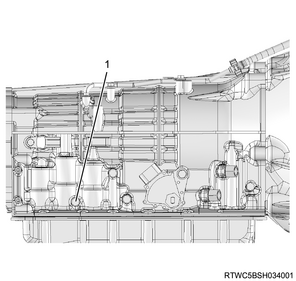

Note
The ATF temperature is high. (50 to 80°C [122 to 176°F])
Switch of A/C and light etc are off.
Note
Inspect the operating condition of the automatic transmission components by measuring the line pressure at D range and R range, or each engine speed.
Chock 4 wheels and apply parking brake fully, lock vehicle perfectly.
Install oil pressure gage to test hole for line pressure.
While depressing the brake pedal, move the select lever to D range and R range, and measure the line pressure at each engine speed.
Caution

| Engine speed | Line pressure | |
| D range | R range | |
| ： 700 r/min | ： 357 to 427 kPa { 3.6 to 4.4 kgf/cm2 / 52 to 62 psi } | ： 454 to 662 kPa { 4.6 to 6.8 kgf/cm2 / 66 to 96 psi } |
| ： 2000 r/min | ： 1329 to 1543 kPa { 13.6 to 15.7 kgf/cm2 / 193 to 224 psi } | ： 1295 to 1513 kPa { 13.2 to 15.4 kgf/cm2 / 188 to 219 psi } |
| Result of time lag test | Cause of failure |
| High than standards both D and R range | Pressure control solenoid C (SLT) failure Primary regulator valve failure |
| Lower than standards both D and R range | Pressure control solenoid C (SLT) failure Primary regulator valve failure Oil pump failure |
| Lower than standards only D range | D hydraulic circuit failure C1 failure |
| Lower than standards only R range | R hydraulic circuit failure C3 failure B4 failure |